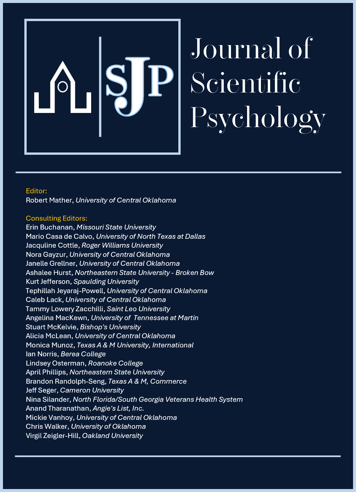

Editorial Board

Editor
Robert Mather, University of Central Oklahoma
Consulting Editors
Erin Buchanan, Missouri State University
Mario Casa de Calvo, University of North Texas at Dallas
Jacquline Cottle, Roger Williams University
Nora Gayzur, University of Central Oklahoma
Janelle Grellner, University of Central Oklahoma
Ashalee Hurst, Northeastern State University – Broken Bow
Kurt Jefferson, Spaulding University
Tephillah Jeyaraj-Powell, University of Central Oklahoma
Caleb Lack, University of Central Oklahoma
Tammy Lowery Zacchilli, Saint Leo University
Angelina MacKewn, University of Tennessee at Martin
Stuart McKelvie, Bishop's University
Alicia McLean, University of Central Oklahoma
Monica Munoz, Texas A&M University – International
Ian Norris, Berea College
Lindsey Osterman, Roanoke College
April Phillips, Northeastern State University
Brandon Randolph-Seng, Texas A&M – Commerce
Jeff Seger, Cameron University
Nina Silander, North Florida/South Georgia Veterans Health System
Anand Tharanathan, Angie's List, Inc.
Mickie Vanhoy, University of Central Oklahoma
Chris Walker, University of Oklahoma
Virgil Zeigler-Hill, Oakland University
Copy Editors
Lori Welch, University of Central Oklahoma
Pandora Figueroa, University of Central Oklahoma
Chief Executive Officer & Webmaster
J. Adam Randell, University of Central Oklahoma
Former Editors
Kelli Vaughn-Blount, York University (2005–2006)
Mike Knight, University of Central Oklahoma (2005–2007)
Robert Mather, University of Central Oklahoma (2007–2012)
April Phillips, Northeastern State University (2012–2024)